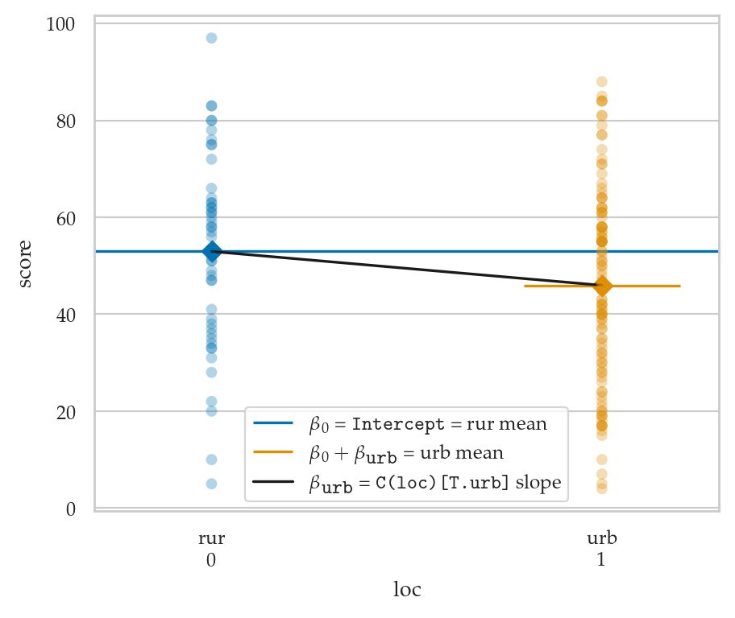
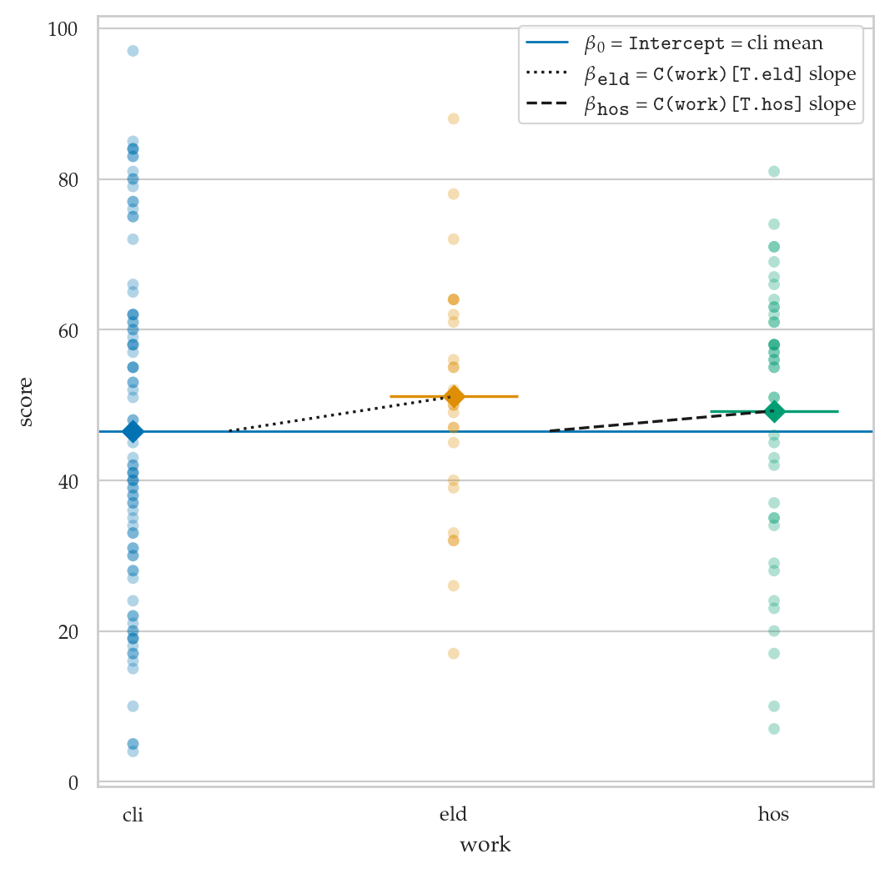
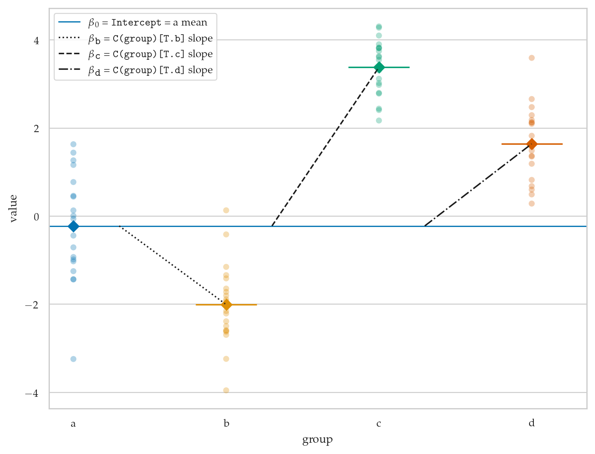

Section 4.4 — Regression with categorical predictors#
This notebook contains the code examples from Section 4.4 Regression with categorical predictors from the No Bullshit Guide to Statistics.
Notebook setup#
# load Python modules
import os
import numpy as np
import pandas as pd
import seaborn as sns
import matplotlib.pyplot as plt
# Figures setup
plt.clf() # needed otherwise `sns.set_theme` doesn't work
from plot_helpers import RCPARAMS
# RCPARAMS.update({'figure.figsize': (10, 3)}) # good for screen
RCPARAMS.update({'figure.figsize': (5, 1.6), # good for print
'text.usetex': True})
sns.set_theme(
context="paper",
style="whitegrid",
palette="colorblind",
rc=RCPARAMS,
)
# High-resolution please
%config InlineBackend.figure_format = 'retina'
# Where to store figures
DESTDIR = "figures/lm/categorical"
<Figure size 640x480 with 0 Axes>
# set random seed for repeatability
np.random.seed(42)
#######################################################
import statsmodels.formula.api as smf
from patsy import dmatrix
doctors = pd.read_csv("../datasets/doctors.csv")
Example 1: binary predictor variable#
lm3 = smf.ols("score ~ C(loc)", data=doctors).fit()
lm3.params
Intercept 52.956522
C(loc)[T.urb] -6.992885
dtype: float64
dmatrix("C(loc)", doctors)[0:5]
array([[1., 0.],
[1., 1.],
[1., 1.],
[1., 1.],
[1., 0.]])
Dummy coding for categorical predictors#
groups = ["A", "B", "A", "C", "C", "B"]
df = pd.DataFrame({"group":groups})
df
| group | |
|---|---|
| 0 | A |
| 1 | B |
| 2 | A |
| 3 | C |
| 4 | C |
| 5 | B |
dmatrix("C(group)", df)
DesignMatrix with shape (6, 3)
Intercept C(group)[T.B] C(group)[T.C]
1 0 0
1 1 0
1 0 0
1 0 1
1 0 1
1 1 0
Terms:
'Intercept' (column 0)
'C(group)' (columns 1:3)
Example 2: predictors with three levels#
lm4 = smf.ols("score ~ C(work)", data=doctors).fit()
lm4.params
Intercept 46.545455
C(work)[T.eld] 4.569930
C(work)[T.hos] 2.668831
dtype: float64
lm4.rsquared, lm4.fvalue, lm4.f_pvalue
(0.007721762574919189, 0.5953116925291042, 0.5526627461285702)
doctors["work"].head(7)
0 hos
1 cli
2 hos
3 eld
4 cli
5 cli
6 hos
Name: work, dtype: object
dmatrix("C(work)", doctors)
DesignMatrix with shape (156, 3)
Intercept C(work)[T.eld] C(work)[T.hos]
1 0 1
1 0 0
1 0 1
1 1 0
1 0 0
1 0 0
1 0 1
1 0 0
1 0 0
1 0 1
1 0 0
1 0 0
1 1 0
1 0 1
1 0 0
1 0 0
1 0 0
1 0 0
1 0 1
1 0 0
1 1 0
1 0 1
1 0 0
1 1 0
1 0 1
1 1 0
1 0 1
1 0 0
1 0 1
1 1 0
[126 rows omitted]
Terms:
'Intercept' (column 0)
'C(work)' (columns 1:3)
(to view full data, use np.asarray(this_obj))
Example 3: mix of numerical and categorical predictors#
lm5 = smf.ols("score ~ C(loc) + C(work) + alc + weed + exrc", data=doctors).fit()
lm5.params
Intercept 62.933582
C(loc)[T.urb] -5.399745
C(work)[T.eld] 2.956527
C(work)[T.hos] 1.456601
alc -1.776628
weed -0.863727
exrc 1.780325
dtype: float64
lm5.summary()
lm5.diagn
{'jb': 2.3215538201644974,
'jbpv': 0.3132427248919844,
'skew': 0.2320927864116041,
'kurtosis': 3.3764224756333547,
'omni': 2.7903807171542074,
'omnipv': 0.2477858637130687,
'condno': 50.50763092507675,
'mineigval': 15.375354453197517}
Everything is a linear model#
One-sample t-test as a linear model#
from scipy.stats import ttest_1samp
kombucha = pd.read_csv("../datasets/kombucha.csv")
ksample04 = kombucha[kombucha["batch"]==4]["volume"]
ttest_1samp(ksample04, popmean=1000)
TtestResult(statistic=3.087703149420272, pvalue=0.0037056653503329618, df=39)
# Prepare zero-centered data (volume - 1000)
kdat04 = pd.DataFrame()
kdat04["zcvolume"] = ksample04 - 1000
# linear model with only an intercept
lmk = smf.ols("zcvolume ~ 1", data=kdat04).fit()
lmk.tvalues[0], lmk.pvalues[0], lmk.df_resid
#######################################################
(3.0877031494203044, 0.003705665350332633, 39.0)
Two-sample t-test as a linear model#
East vs. West electricity prices#
from scipy.stats import ttest_ind
eprices = pd.read_csv("../datasets/eprices.csv")
pricesW = eprices[eprices["loc"]=="West"]["price"]
pricesE = eprices[eprices["loc"]=="East"]["price"]
tstat, pval = ttest_ind(pricesW,pricesE,equal_var=True)
tstat, pval
(5.022875513276465, 0.00012497067987678488)
lme = smf.ols("price ~ C(loc)", data=eprices).fit()
lme.tvalues[1], lme.pvalues[1]
(5.02287551327646, 0.00012497067987678602)
from ministats import plot_lm_ttest
with plt.rc_context({"figure.figsize":(4,4)}):
ax = plot_lm_ttest(eprices, x="loc", y="price")
---------------------------------------------------------------------------
ImportError Traceback (most recent call last)
Cell In[20], line 1
----> 1 from ministats import plot_lm_ttest
3 with plt.rc_context({"figure.figsize":(4,4)}):
4 ax = plot_lm_ttest(eprices, x="loc", y="price")
ImportError: cannot import name 'plot_lm_ttest' from 'ministats' (/opt/hostedtoolcache/Python/3.8.18/x64/lib/python3.8/site-packages/ministats/__init__.py)
Urban vs. Rural doctors#
from scipy.stats import ttest_ind
scoresR = doctors[doctors["loc"]=="rur"]["score"]
scoresU = doctors[doctors["loc"]=="urb"]["score"]
tstat, pval = ttest_ind(scoresU, scoresR, equal_var=True)
tstat, pval
(-1.9657612140164198, 0.05112460353979369)
lm3 = smf.ols("score ~ C(loc)", data=doctors).fit()
lm3.tvalues[1], lm3.pvalues[1]
(-1.9657612140164218, 0.051124603539793465)
with plt.rc_context({"figure.figsize":(5,4)}):
ax = plot_lm_ttest(doctors, x="loc", y="score")

One-way ANOVA as a linear model#
from scipy.stats import f_oneway
scoresH = doctors[doctors["work"]=="hos"]["score"]
scoresC = doctors[doctors["work"]=="cli"]["score"]
scoresE = doctors[doctors["work"]=="eld"]["score"]
f_oneway(scoresH, scoresC, scoresE)
F_onewayResult(statistic=0.5953116925291182, pvalue=0.5526627461285608)
lm4 = smf.ols("score ~ C(work)", data=doctors).fit()
lm4.fvalue, lm4.f_pvalue
(0.5953116925291042, 0.5526627461285702)
from ministats import plot_lm_anova
with plt.rc_context({"figure.figsize":(6,6)}):
ax = plot_lm_anova(doctors, x="work", y="score")

# Construct data as a pd.DataFrame
a = np.random.normal(0, 1, 20)
b = np.random.normal(-2, 1, 20)
c = np.random.normal(3, 1, 20)
d = np.random.normal(1.5, 1, 20)
df = pd.DataFrame()
df["group"] = ["a"]*20 + ["b"]*20 + ["c"]*20 + ["d"]*20
df["value"] = np.concatenate([a, b, c, d])
with plt.rc_context({"figure.figsize":(8,6)}):
ax = plot_lm_anova(df, x="group", y="value")

Explanations#
Discussion#
Exercises#
Links#
Patsy and Statsmodels https://www.youtube.com/watch?v=iEANEcWqAx4
Tests as LMs: https://lindeloev.github.io/tests-as-linear/
https://danielroelfs.com/blog/everything-is-a-linear-model/ via HN